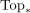
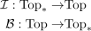
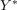
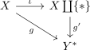
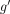
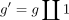
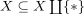

basification Functor from Top to based spaces as adjoint
1. Proposition
Let  be category Top and
be category Top and

the category of based spaces. Then the basification Functor functor is adjoint to the inclusion functor
2. Proof
using left adjoint and universal morphism
Let  be a topological space and
be a topological space and

a based space Then consider
where

is given by
This map is continuous by universal property and unique, as the base point has to map to the base point and

has to respect